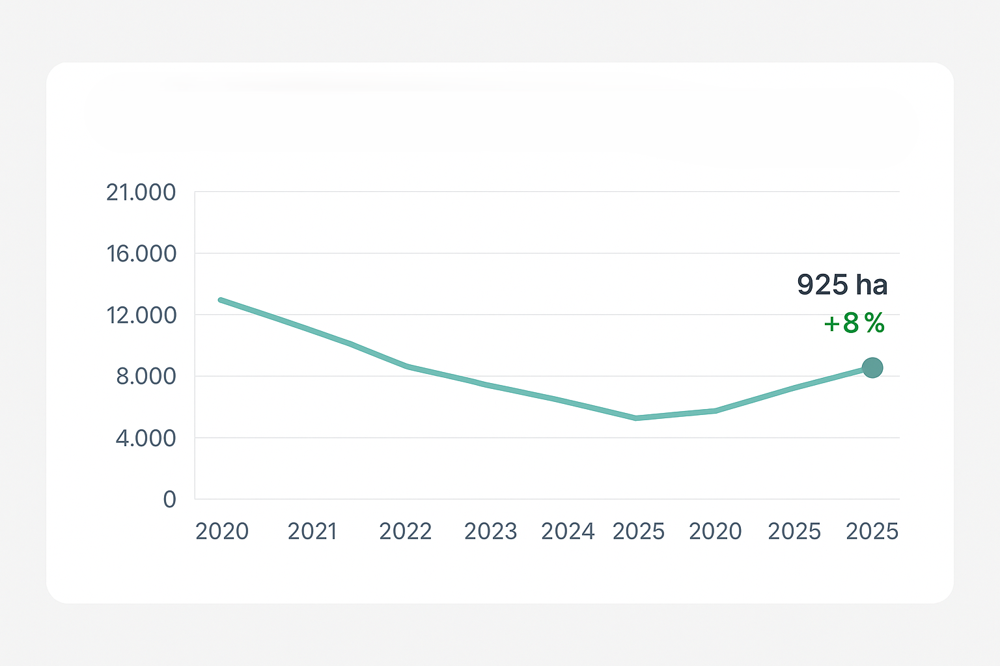

Panel de Tendencias y Modelos Predictivos
Tendencia deforestación en Madre de Dios
Año actual: 2025
Área deforestada: 925 ha (+8% respecto 2024)
Ver evolución históricaPredicción de Incendios 2026
| Zona | Probabilidad de Incendio | Riesgo |
|---|---|---|
| Reserva Los Amigos | 52% | Alto |
| P. Nacional Manu | 21% | Medio |
| Zona Tampobata | 33% | Medio |
Matriz de Correlación de Amenazas
| Amenaza | Temperatura | NDVI | Presencia Humana |
|---|---|---|---|
| Incendios | 0.76 | -0.52 | 0.29 |
| Deforestación | 0.44 | -0.81 | 0.63 |